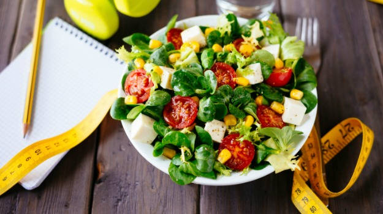

LOGO
Présentation
Diététicienne Nutritionniste diplômée d’État
Diététicienne nutritionniste diplômée d'Etat, spécialiste en micro nutrition, je suis installée à Courbevoie - Hauts-de-Seine depuis 1992.
Vingt ans d’expérience
combinant des interventions auprès de profils de patients multiples (femmes enceintes, enfants/ adolescents, adultes, personnes âgées, sportifs, végétariens/ végétaliens) et associant des prises en charge multi-pathologies : diabète, hypercholestérolémie, l’hypertension artérielle, l’arthrose, la colite, l’ulcère, la ménopause, allergies alimentaires, maladies métaboliques, autres troubles de conduite alimentaire (excès de graisse & triglycérides, consommation d’oméga 3) m’ont forgé cette conception de la diététique : nous sommes tous différents, il existe « un bien manger » propre à chacun.
Praticienne passionnée
fervente adepte du précepte d’Hippocrate "Que ton alimentation soit ta médecine", je développe une approche globale de la Diététique au service d’un seul objectif fondamental : concilier alimentation plaisir et alimentation santé en intégrant toutes les dimensions de l’acte alimentaire (aspect physiologique, aspect psychologique et aspect sociologique).

Établir ensemble une stratégie nutritionnelle personnalisée
J’établis avec vous une stratégie nutritionnelle personnalisée et adaptée selon votre histoire, vos besoins, vos goûts et votre mode de vie. Il est important de comprendre son comportement alimentaire, de connaître ses besoins et la composition des aliments, pour améliorer son alimentation et mener à bien certains changements sans contrainte ni frustration.
Cette notion d’accompagnement sur mesure au service de la mise en place d’un programme diététique et nutritionnel comportemental est au cœur de ma méthode guidée par le concept de Régime Gourmand.
Le travail autour du comportement et des émotions, toujours dans un but de résultat durable, me conduit à vous aider à vous apprendre à faire le tri entre besoins nutritionnels et pulsions alimentaires.
Par mon écoute et mon soutien, je vous guide, vous accompagne et vous motive dans cette recherche de bien être durable en étant votre coach jusqu’à ce que vous trouviez l’équilibre optimal Plaisir/ Santé.
Professionnelle de santé experte en nutrition et alimentation
Professionnelle de santé experte en nutrition et alimentation, toujours en veille par rapport aux avancées de la recherche médicale et scientifique, je me suis spécialisée plus récemment dans la Diététique Bien-Etre & Anti-âge (alimentation automédication et levier de prévention du vieillissement) : lutte contre l’oxydation, rééquilibrage acides gras, vitamines, minéraux et supplémentation alimentaire.